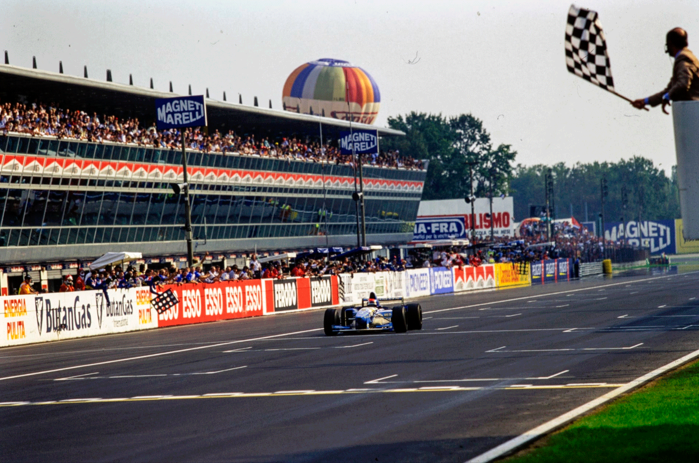
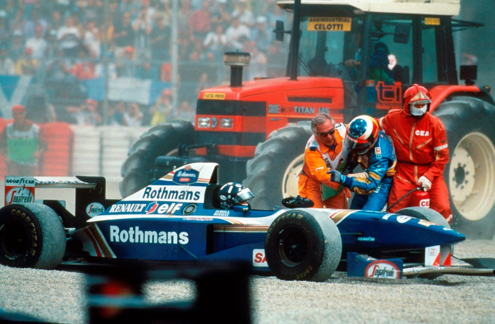
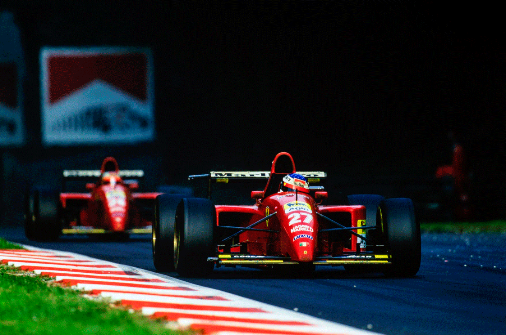
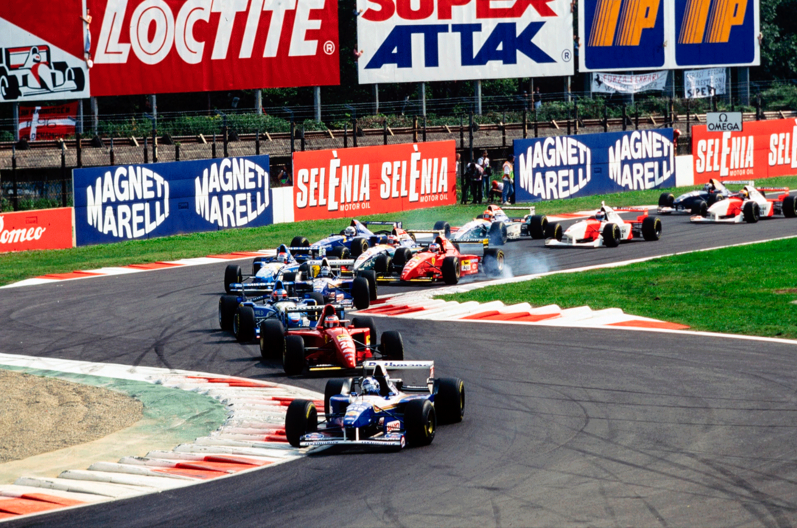
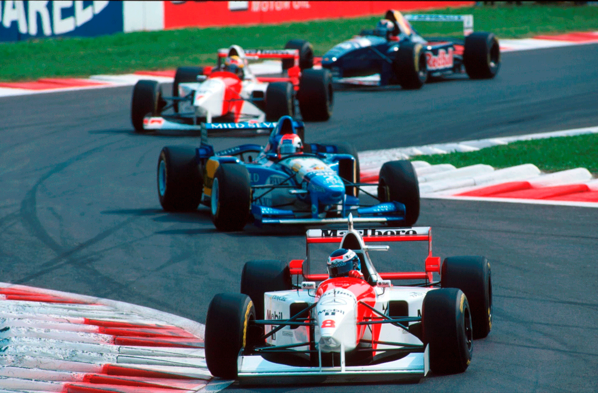

Monza - 10/09/1995
HERBERT SOBREVIVE E VENCE EM MONZA

Corrida com lances dramáticos: Coulthard sai na volta de aquecimento, mas regressa dominador na 2ª largada (carambola na 1ª volta); Hill bate em Schumacher e os dois abandonam; Ferrari lideram, mas abandonam. Herbert herda 1º, Hakkinen 2º. Primeiro pódio de Frentzen.
Francisco Santos
Foi o GP das desilusões. Para Schumacher, que queria ver reforçada sua liderança no campeonato. Para Hill, que poderia ter aspirações a diminuir essa diferença. Para Coulthard, que aspira à sua 1° vitória. Para Alesi e Berger que, no seu último GP de Itália pela Ferrari, aspiravam a presentear a equipe. Para os tiffosi que durante 28 voltas viram o seu GP ser comandado por um — e até dois — dos seus carros vermelhos. Este GP teve um desfecho igual à prova inglesa: o azarão Johnny Herbert, largando muito bem da 8ª posição do grid, fez uma corrida inteligente em ritmo e tática, sobreviveu à hecatombe entre os favoritos, e venceu, como em Silverstone.
Animosidade entre rivais
Voltamos alguns anos atrás, quando se esperava sempre o pior entre os dois contendores para o título? De novo, Hill atropelou Schumacher, jogando-o para fora da pista, e terminando ali mesmo a prova para os dois. Até que desta vez nenhum deles comandava a corrida, mas a cena, com contornos menos simples quanto em Silverstone, tem muitas semelhanças. Não é certamente o mesmo estranho sentimento misto de ódio, desprezo, mas de mútuo respeito, que fluía entre Senna e Prost, e galvanizava multidões. Está nascendo entre Hill e Schumacher algo de pouco sadio, fruto de uma rivalidade mais comezinha, sem respeito, entre um piloto nitidamente superior e um mais simples, comum carro melhor. Depois das cenas de Silverstone, de Spa, agora isto, é lamentável.

Hill — Schummy: culpa de quem?
À 24° volta, Schumacher circulava em 2°, a 3,5s de Berger, que comandava a prova desde a 14′ volta, quando Coulthard, indiscutivelmente o mais rápido em pista durante todo o fim de semana. Em 3°, certo que tinha mais carro que o alemão, Hill não tinha pressa para tentar passar. Tinha a certeza que se tudo corresse bem no reabastecimento, Schumacher não seria problema. Na 2′ chicane, Schumacher encontrou Inoue, com uma volta a menos. O japonês encostou o Arrows à direita, e Schumacher passou por dentro. Quando Hill se preparava para passar Inoue, este, “receoso de frear no vácuo do Benetton”, passou para a esquerda; aí, Hill guinou para a direita, na mesma trajetória de Schumacher. Algo estranho se passou então. Como se pode ver pelas imagens de TV, Inoue ganhou terreno a Schumacher na freada final — o que não será nunca muito normal… —, e Hill atropela o Benetton. Será que Schumacher freou demais, para tentar evitar que Hill passasse Inoue antes da chicane? Apesar da Benetton afirmar que não (vide box na página seguinte) parece ser o mais plausível. Será que Hill se precipitou? Possível. Uma coisa é certa: Inoue, com sua inexperiência, atrapalhou a manobra e contribuiu, involuntariamente, para o incidente. Pelas imagens de TV parece-me evidente que a culpa terá sido repartida.
Sonho desfeito da Ferrari
Com os dois rivais fora de prova, as duas Ferrari ficaram sozinhas no comando da prova, e assim se mantiveram depois dos reabastecimentos de todo o mundo, durante os quais Barrichello (26′ volta), Hakkinen (27°) e Hebert (28° e 29°) lideraram ocasionalmente. O sonho era grande, mas possível, já que à 32ª volta o Benetton sobrevivente estava a 9,1s do líder. Foi quando se deu o primeiro baque: a câmara de TV presa na aleta direita do aerofólio traseiro de Alesi desprendeu-se para a pista, destruindo a suspensão esquerda de Berger. O austríaco, que pensava brigar pela vitória nas últimas voltas, abandonou ali. Mesmo assim, Alesi continuava no comando, com mais de 8s na frente de Herbert. No entanto, à 45ª volta, a diferença diminuiu 1s. Algo de errado se passava com a Ferrai. Um rolamento da roda esquerda gripou, e se incendiou, levando Alesi ao box para abandonar, inconsolável, em lágrimas. Pelo segundo ano consecutivo ele abandonava no comando, em Monza, numa Ferrari.

Pódio delirante
Se Herbert estava radiante no sempre festivo pódio de Monza, inclusive fazendo gestos obscenos de raiva pelo seu despedimento, os outros dois — Hakkinen e Frentzen — mais delirantes estavam. Era o melhor resultado dos dois e o primeiro pódio de Frentzen — com um Sauber cada vez menos medíocre, e a poder corresponder ao seu talento de piloto. Fora do pódio, mas igualmente satisfeitos ficaram Blundell, em 4°, Salo, em 5°, conquistando seus primeiros pontos e os primeiros da Tyrrell este ano, e Bouillon, em 6°.
OS TREINOS
A chuva da madrugada deixou o asfalto novo ainda úmido na primeira parte da 6° feira de manhã. Alesi foi primeiro a andar, para regalar os fãs. A pista foi modificada, com escapatórias maiores, aumentando nitidamente a segurança. Com o asfalto novo, e a necessidade de diminuir o apoio aerodinâmico para ganhar velocidade de ponta, os acidentes multiplicaram-se. Hakkinen teve saídas de pista tanto de manhã como de tarde. Na 1ª qualificação Coulthard mostrou logo sua atual forma: melhor tempo, 0,38s melhor que Berger, e, mais importante, 0,46s mais rápido que Hill no primeiro Williams. Mais impressionante até foi sua performance no dia seguinte. Embora de manhã, Alesi tenha batido seu tempo, na 2′ qualificação, em que a pista ficou vazia nos primeiros 25 minutos para desespero dos tiffosi, o escocês foi o único a baixar de 1m25s, primeiro com um espantoso 1m24,77s, e, depois, nos derradeiros cinco minutos, com 1m24,49s, seguido da confirmação, com 1m24,46s, batendo Schumacher por mais de meio segundo e Hill, também batido por Berger, por 1,23s! Sem contrato ainda definido para 1996, é natural que Coulthard se tenha sentido ainda mais motivado para andar nos limites, ainda mais em Monza, uma vez que uma de suas hipóteses era assinar pela Scuderia como 2° de Schumacher… Sábado não foi dia bom para a Minardi: de manhã Pedro Lamy saiu muito forte em Lesmo, mas sem consequências físicas. À tarde foi a vez de Badoer, querer impressionar o pessoal da Ferrari (um dos pretendentes à vagá): na entrada para a chicana Ascari, freou 17m mais tarde do que habitual, a uma velocidade de 287,9km/h (13° mais veloz naquele ponto). O Minardi escapou, para a direita e para a esquerda, levantou voo, bateu na barreira e capotou. Algo inusitado para a Renault: pela 1ª vez desde o GP do Japão de 93 (!), um motor se quebrou durante os treinos — o de Hill. Barrichello era um excelente 6° no grid! No domingo de manhã. Alesi, que estava desiludido com apenas o 5° lugar no grid, foi de novo o mais rápido num treino livre, mas com o carro reserva, seguido de Coulthard, Berger, Schummy (ainda ás voltas com o chassis instável) e Hill.

A CORRIDA
Logo na volta de aquecimento, primeiro drama — Coulthard, na pole, saiu em frente na Variante Ascari, perdeu tempo e regressou ao box, para desistir. Os outros já haviam largado. “A pista tinha muito óleo, mas a culpa foi minha”, confessou. No entanto, o destino estava com ele: na primeira passagem pela mesma Variante, houve uma carambola múltipla e a corrida foi interrompida. Com nova largada—uma nova corrida—ocupou de novo a pole, com o carro-reserva. O grid teve só 22 carros: Moreno e Montermini — no acidente ficaram danificados dois Forti, e a Pacific não tem dinheiro para terceiro carro. Coulthard largou bem, Berger não se deixou intimidar pela manobra de Schumacher, chegou nele na 1ª chicane, mas, enquanto na primeira largada não discutira com o alemão, agora passou-o sem discussão. O escocês parecia determinado a mostrar sua superioridade e ia aumentando sua vantagem sobre Berger, e este sobre Schummy, que à 10′ volta já estava a 4,1s da Ferrai, com Hill, Alesi e Barrichello atrás dele. À 140 volta, Coulthard seguiu em frente na 2′ chicane. Desta vez não foi erro, foi o rolamento da roda dianteira direita gripado.Ficou Berger no comando e sua vantagem sobre Schumacher ia aumentando: à 210 volta já era de 3,4s, e Hill começava a ameaçar mais o alemão, cujo trem de corrida era inferior, pelo que Alesi também se aproximou. Com o acidente Schummy-Hill à 24ª volta, ficaram duas Ferrari na frente: Berger-Alesi. Monza virou um mar de bandeiras vermelhas. Os Tyrrell haviam parado logo à 120 e 150 voltas: únicos a optar por dois reabastecimentos.

As paradas de todos os outros começaram à 22ª volta (Diniz). Com as duas Ferrari no box, à 250 e 260 voltas, Barrichello assumiu a liderança, depois Hakkinen e finalmente Herbert, que fora o último dos “grandes” a reabastecer, o que lhe valeria muito mais tarde. A parada de Berger foi mais lenta: Alesi ficou no comando, mas com Berger colado, e certo de que nas últimas voltas poderia disputar a vitória. Mas, isso não aconteceria. Dois casos fortuitos ofereceram a Herbert uma vitória com a qual ele nunca poderia ter sonhado. À frente dele havia cinco carros favoritos (duas Ferrari, duas Williams e a outra Benetton). Todos ficaram pelo caminho, numa hecatombe geral. No entanto esta segunda vitória — como a primeira — foi merecida. Johnny tem sido uma vítima nas mãos de Schumacher, mas tem cumprido seu papel, e, agora em Monza, além de manter um bom trem de corrida, soube escolher a melhor estratégia, que lhe permitiu ganhar tempo a Hakkinen e Barrichello que o haviam passado logo no início da corrida, quando seu carro estava pesado. Os Sauber jogavam em casa: Monza é a sua pista de testes. Frentzen ganhou a luta com Blundell, enquanto Boullion, que largara dos boxes, como carro-reserva acertado para Frentzen, ainda conseguiu um ponto. Nota dez para ambos. Para a McLaren também foi dia em cheio: melhor resultado do motor Mercedes desde que voltaram á F1, e duas excelente pontuações. Barrichello teve de novo problema hidráulico e depois sua embreagem explodiu quando estava em 5° a 7 voltas do fim. Lamy não passou da 1ª volta: diferencial. Pela segunda vez no ano nenhum Williams nem Ferrari à chegada. ❑